クロス集計とカイ二乗
クロス集計
概要
カテゴリデータの分析にはクロス集計が多く使われています。これらの分析では、分割表を使った変数の度数分布を示します。表をベースにした分析は有意な関連性があるかどうかを決定し、関連性の強さと方向を作成して、一致対データの一致を計測して検定します。
必要なOriginのバージョン:Origin 2016 SR0以降
学習する項目
このチュートリアルでは、以下の項目について説明します。
- クロス集計の実行の方法
- 結果の解釈方法
ユーザストーリー
これは、1992年5月に実行された、418人のうち209人から得られた人口に関連する世論調査データMontana Economic Outlook Pollです。年齢（35才より下,35-54才,55才以上）、性別（男性、女性）、経済状況（昨年より：悪い、同じ、良い）等。データから得たい情報は下記です。
- 3つの異なる年齢グループでの経済状況の度数分布と、分布の中で男性と女性がどのように異なるか。
- 男性と女性のグループに対して、経済状況と年齢の明らかな関係性があるか。
- これらの相関性の強さ。
データ分析の準備
- 新しいプロジェクトまたは新しいワークブックを開きます。 ファイル\Samples\Statistics\MontanacOutlookPoll.datをインポートします。
- 分類値をソートします。
- MontanacOutlookPoll ワークシートで、B列を選択して右クリックし、カテゴリーとして設定を選択します。カテゴリー行にあるソートなしをダブルクリックして、カテゴリーダイアログを開きます。カテゴリーの編集（追加、削除、任意の順) box.最上部に移動のボタン
 、上に移動のボタン、下に移動のボタン
、上に移動のボタン、下に移動のボタン 最下部に移動のボタン
最下部に移動のボタン を使って、"35才より下、"35-54才" と"55才以上"の順に並べ替えます。
を使って、"35才より下、"35-54才" と"55才以上"の順に並べ替えます。
- 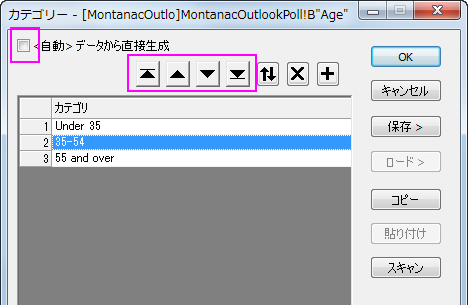
- カテゴリーマッピングが<Female, Male>になるように、列Cに繰り返します。
- カテゴリーマッピングが<Better, Same, Worse>になるように、列Gに繰り返します。
クロス集計とカイ二乗
- メニューから統計：記述統計：クロス集計とカイ二乗を選択して、クロス集計とカイ二乗のダイアログを開きます。
- 入力タブをクリックします。データは行データモードにあるので、B列、G列、C列をそれぞれ、行、列、レイヤに選択します。
- 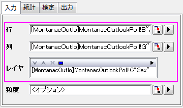
- 統計のタブをクリックし、予測カウント、残差、標準残差、調整済み残差のチェックを外し、他はデフォルトのままにします。
- 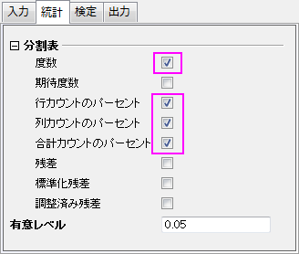
- 検定のタブで、カイ二乗検定のチェックボックスを選択します。関係性の尺度ブランチを開き、分割表の係数、Phi、クラメールのVボックスを選択します。
- 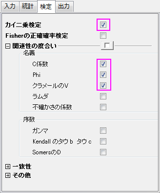
- 出力タブを開き、モザイクプロットチェックを付けます。初期設定のまま、OKボタンをクリックします。
- 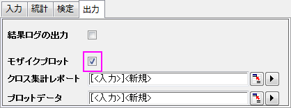
結果の解釈
Crosstab1 シートを見てください。
度数分布
モザイクプロットと分割表から度数分布の情報を得ることが出来ます。モザイクプロットの中の個々の長方形範囲は、男性、女性、及び全体に対する”年齢”と"経済環境"を視覚的に比較できるように、Ｘ変数のそれぞれのレベルの中にあるＹ変数の割合に比例します。分割表から、より特化した情報を取得することが出来ます。分割表とモザイクプロットを併せると、次のことが分かります。
- 若い女性と高齢の女性の考え方は大きな隔たりがあります。
- 35才未満の女性の大多数である59.5%は、より良い経済状況であると感じています。55才以上の女性の大多数である58.3%は、経済状況は変わらないと考えています。
- 35才未満の女性の少数派11.9%は、経済状況は変わらないと考えているが、55才以上の女性の少数派11.1%は経済状況は良くなっていくと考えている。
- 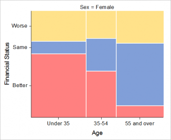 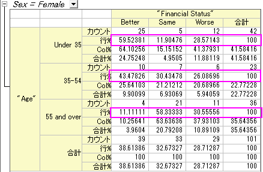
- 経済状況について男女の考えを比較してみると、以下のような興味深い結果が得られました。
- 男性は年齢層によって、経済状況に大きな違いは見られません。
- 35-54才の男性は、自らの経済状況に対して、やや自信がある傾向があります。
- 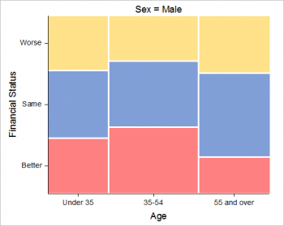 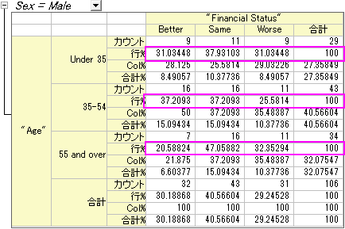
- 回答者の性別に関係なく、年齢による傾向があります。
- 55才未満の人は自らの経済状況に、自信がある傾向があります。
- 55才を超える人は、自分の経済状況が変わっていないと感じる傾向があります。
- 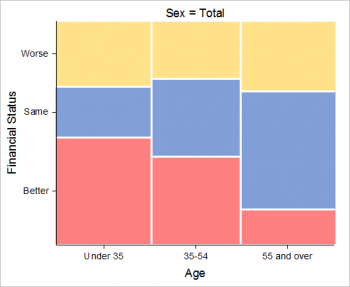 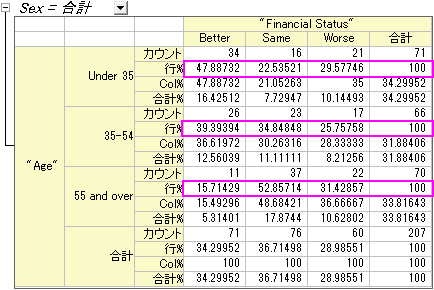
年齢と経済状況の関係の検出
カイ二乗検定表は、行と列の値に結果を示します。
もし、Prob>カイ二乗が0.05より小さい場合、これは、行や列の変数、ここでは年齢と経済状況は明らかに相関しています。表の下にあるフットノートの結果に注目します。次のような結論になります。
- 年齢の異なる女性は、異なる経済状況にあります。
- 反対に、男性の年齢と経済状況を関係付ける明確な根拠は見当たりません。
- 性別にかかわらず、年齢によって異なる経済状況にあります。
- 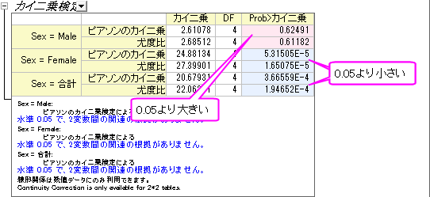
関係強度の評価
関係性の測定表は、「経済状況」と「年齢」の関係の強さを示します。これは、3ｘ3 のテーブル（3つの年齢層と3つの経済状況レベル）なので、レイヤ間を比較するために、 Contingency 係数 を選択します。(3つの統計の違いについてはこちらの機能紹介ページを参照してください)表から次のことがわかります。
- 女性の経済状況は男性よりも年齢に強く関係しています。(0.444 v.s.0.155)
- 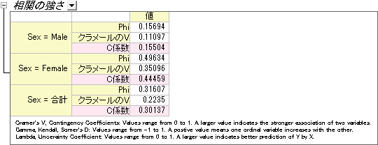